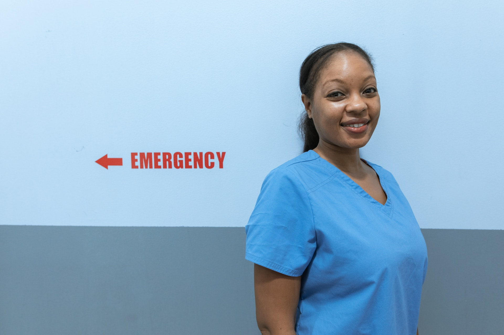
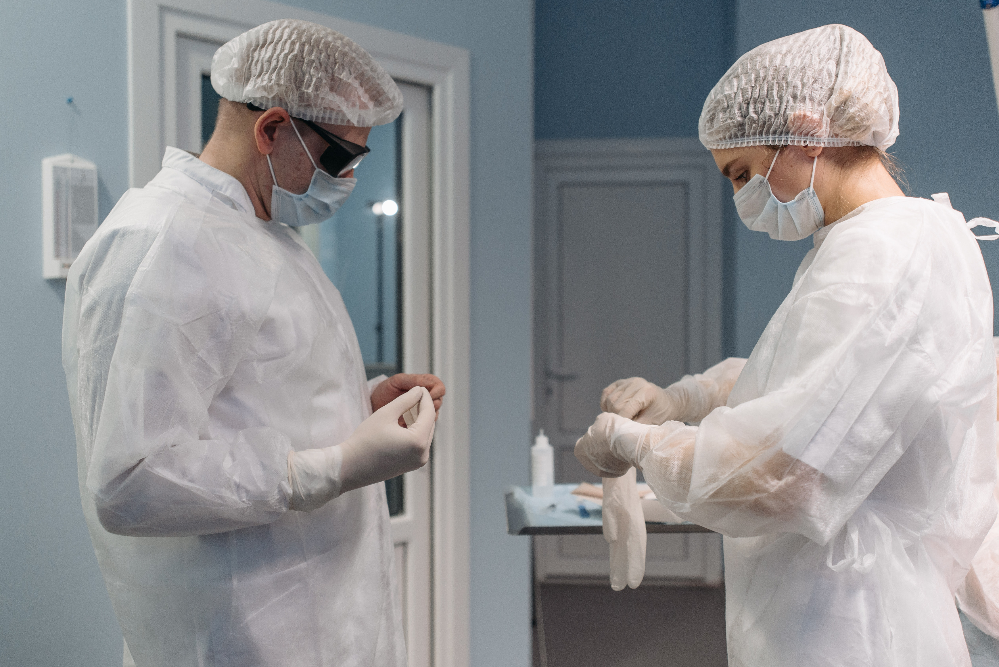
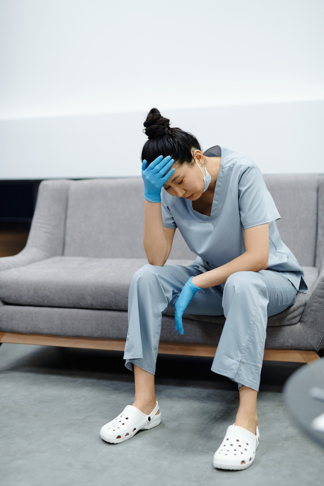
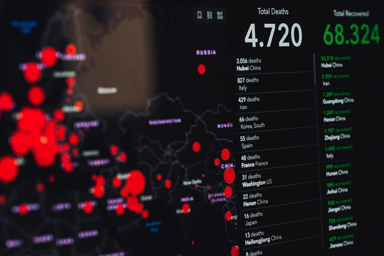
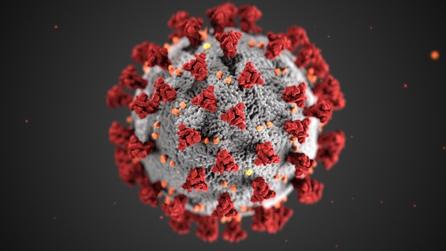
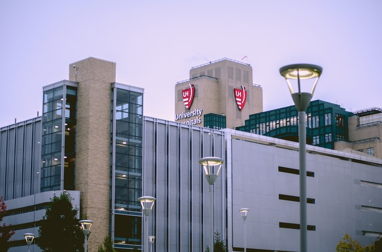

ENFERMEROS
Los estudiantes de la Facultad de Enfermería y Estudios de Salud de la Universidad de Miami hacen sus prácticas en la sala de emergencias de los hospitales comunitarios bajo la supervisión de sus profesores. Allí prestan atención de salud a pacientes de todas las edades, géneros, razas y nacionalidades. En un turno de guardia típico atienden casos de pacientes con infarto, apoplejía, diabetes, infecciones y con lesiones, entre otros.
Sin embargo, hace tres semanas que esta rutina cambió de un día al otro debido al brote repentino de la enfermedad por el coronavirus del 2019 (COVID-19).
Desde entonces, el número de pacientes que llega a diario a la sala de emergencias con síntomas de la COVID-19 ha crecido exponencialmente. Para evitar que la enfermedad se propague, el hospital ha establecido un sistema de vigilancia estricto. Los pacientes que llegan a la sala de emergencias deben esperar en la entrada a que se les haga un breve examen médico. Una enfermera o enfermero -utilizando el equipo de protección recomendado- verifica sus signos vitales y les toma la temperatura.

EL TRIAJE ORGANIZADO LA ATENCION
Los pacientes con síntomas graves por infección del coronavirus se ingresan en la sala de emergencias. En cambio, aquellos con síntomas leves o moderados son referidos a alguna de las tiendas de campaña que el hospital ha instalado en el estacionamiento de vehículos. Durante esta crisis de salud mundial, el hospital ofrece acceso y atención de salud a todas las personas, independientemente de su estado migratorio o de si cuentan o no con un seguro de salud.
Cuando los pacientes llegan a la tienda de campaña, un equipo de enfermeras y enfermeros les pregunta por su historial médico y controla nuevamente los signos vitales y la temperatura. Luego, se les envía a otra estación para hacerles la prueba del coronavirus y para ello se obtiene una muestra del interior de las fosas nasales. También se les hacen las pruebas de influenza y de faringitis estreptocócica y, si es necesario, se realiza una radiografía del tórax. Finalmente, los pacientes pasan al área donde les examinan enfermeros de práctica avanzada como nosotros. Antes de prestarles atención de salud debemos prepararnos cuidadosamente.
Nos lavamos las manos. Nos ponemos todo el equipo de protección personal, compuesto por la bata y la gorra, las gafas de seguridad, el respirador, el protector facial y los guantes. Llevamos este equipo protector durante todo nuestro turno. Entre un paciente y otro desinfectamos los estetoscopios con alcohol, nos lavamos las manos y nos cambiamos los guantes.

El diagnóstico a los pacientes se realiza a partir de los síntomas. La mayor parte de ellos pueden volver a sus casas. A todos se les dan instrucciones sobre cómo manejar esta enfermedad atípica siguiendo las recomendaciones de los Centros para el Control y Prevención de Enfermedades (CDC) de los Estados Unidos. Deben aislarse de los demás durante 14 días, llevar una mascarilla, descansar, tomar líquidos calientes y acetaminofén para la fiebre. Se les recomienda volver al hospital si no pueden respirar o controlar la fiebre y que esperen los resultados de la prueba..
Cuando trabajamos en la sala de emergencias atendemos a los pacientes con síntomas más graves, a quienes se aísla de los demás para evitar contagios. Se determina si la respiración es demasiado rápida o lenta, si tienen tos o dificultades para respirar. Para entrar en las habitaciones donde están, usamos respiradores N95 o N99. Para entrevistarles mantenemos una distancia de seis pies (1,82 metros). Luego sigue el momento de mayor riesgo, cuando nos acercamos a ellos para examinarlos. Si presentan signos graves, se les ingresa.
Durante un turno, entre la tienda de campaña y la sala de emergencias del hospital se atiende a más de 60 pacientes con síntomas de la COVID-19. Esta enfermedad no discrimina. Todos resultan afectados. Sabemos que tendremos que prestar atención de salud cada vez a más pacientes, porque según la experiencia de otros países, los que están infectados empiezan a empeorar en un periodo de 2 a 3 semanas.

UNA ENFERMEDAD, NUEVA TAMBIEN PARA LOS TRABAJADORES DE LA SALUD

Para casi todos los profesionales de la salud, esto es completamente nuevo. Sabíamos que el número de personas infectadas con la COVID-19 iba a aumentar, pero no que fuera a ocurrir tan aceleradamente. Y vamos a continuar viendo un incremento impresionante en los números, porque muchos pacientes regresan unos días después al empeorar sus síntomas. Si tenían otras enfermedades previas, se observan síntomas como niveles bajos de oxigenación o de presión arterial. Cuando tienen neumonía y dificultades para respirar se les intuba. Esto es preocupante, porque se teme no contar con suficientes respiradores. La situación también es difícil para los pacientes porque no se permite que sus familiares los acompañen.
Son unas circunstancias de mucho estrés para todos los profesionales de la salud e incluso para los pacientes. Queremos prestarles los mejores cuidados posibles, pero a la vez debemos protegernos para no llevar el virus a nuestras casas y a nuestras familias, y para no enfermar nosotros. Es difícil, sobre todo cuando ves a un colega que enferma y requiere intubación. En ese momento recordamos nuestra propia mortalidad. Todavía no hemos visto lo peor.
Siempre hay que hablar de la salud a nivel global. Controlar las enfermedades transmisibles es complicado porque lo que sucede en un país repercute y se transmite a otros. Por eso es importante prepararse para cualquier crisis.
Han pasado 8, 10 o 12 horas en el hospital, casi sin parar. Terminamos los turnos de guardia exhaustos. Nos quitamos el equipo de protección personal. Nos lavamos las manos. Dejamos atrás las tiendas de campaña y a los pacientes que aún siguen llegando. Quedan en las manos capaces de nuestros colegas, que ahora asumen el riesgo del contagio.
DE NOCHE ATORMENTAN LAS PREGUNTAS

¿Cuántos pacientes de los que atendimos hoy tendrán pruebas con resultado positivo? ¿Cuántos de ellos regresarán en unos días con fiebre incontrolable o con insuficiencia respiratoria? ¿Cuántos acabarán intubados? ¿Qué será de ellos? ¿Cuántos casos más veremos mañana y en una semana, y en otro mes? ¿Nos quedaremos sin equipos de protección personal? ¿Cuántos de nuestros colegas caerán enfermos frente a este virus invisible y devastador?
En los ojos de nuestros compañeros buscamos la esperanza y la fuerza para seguir. Nos alienta saber que estamos unidos a una comunidad mundial de enfermeras y enfermeros, y que todos estamos luchando para salvar vidas. Nos motiva nuestra vocación.
Pero también nos anima nuestra fe en la ciencia. En este momento hay científicos –entre ellas y ellos, enfermeras y enfermeros investigadores– en sus laboratorios, dedicados a encontrar una solución. Después de llegar al punto máximo de casos, llegará el día en que veremos cómo se reducen. Llegará el día en que haya medicamentos efectivos. Llegará una vacuna.

Hospital de Texas
Uno de los hospitales mas famosos de la actualidad, muy recomendado por la sociedad.

Hospital de oxford
Uno de los mejores hospitales de hoy en dia, muy valioso a la hora de elegir un buen hospital.
Hospital de washington
Muy buena reputacion a la hora de hacerse una cirugia plastica, de los mejores hoy en dia.